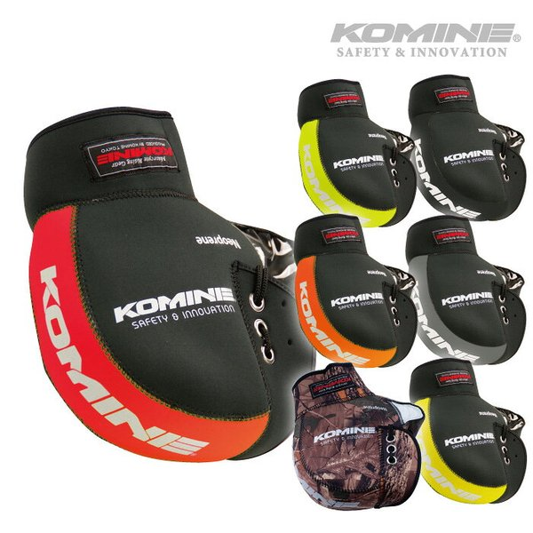
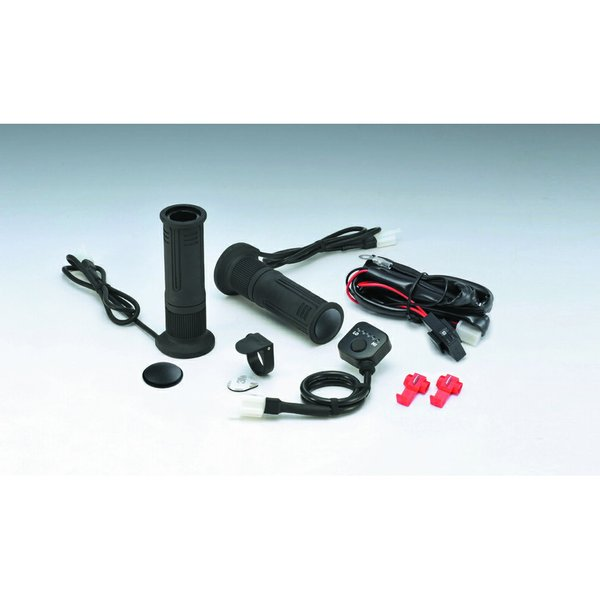
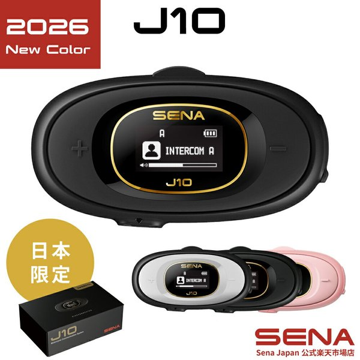
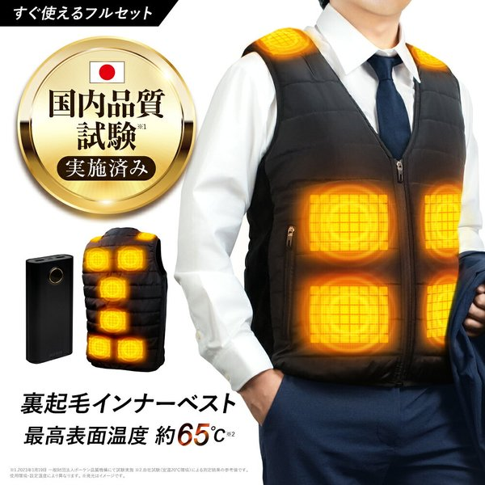
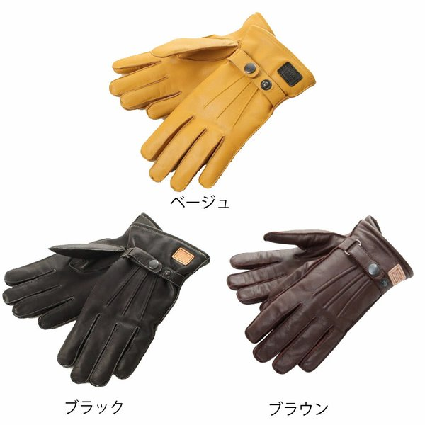
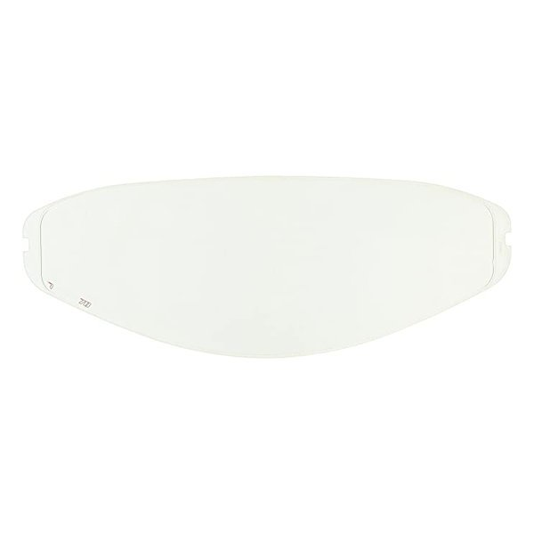
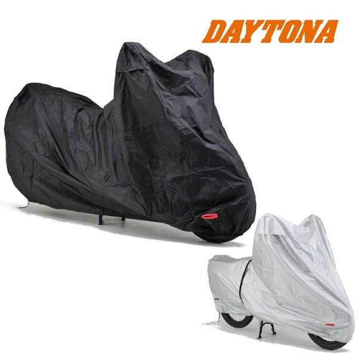
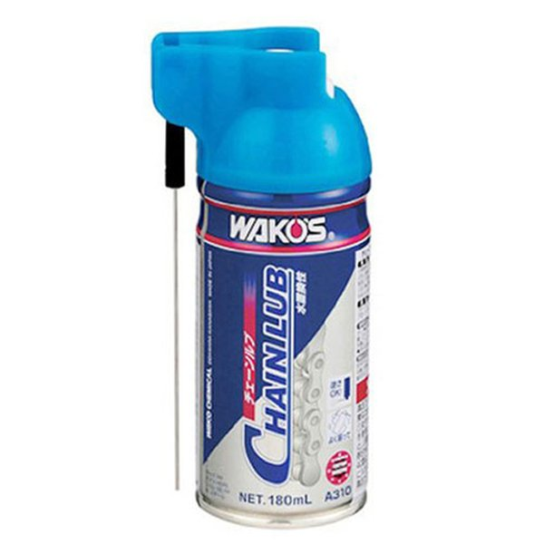
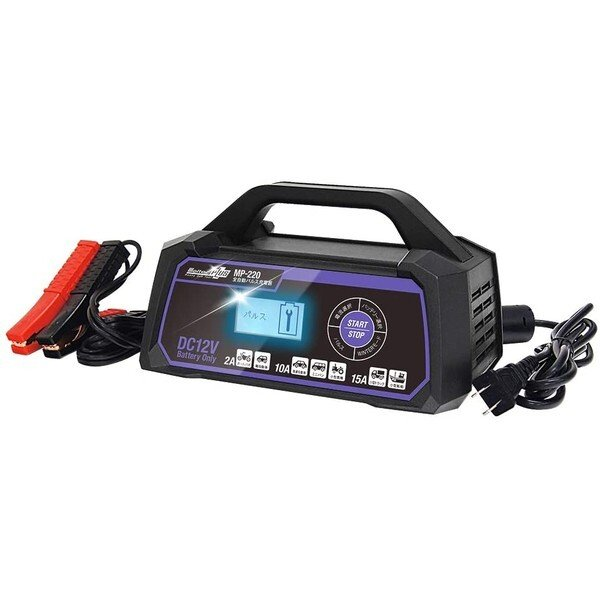
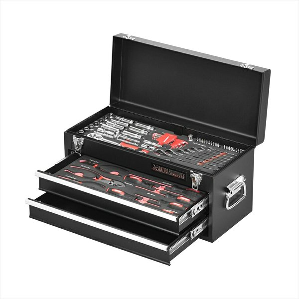

【2026年・冬のバイク】ツーリング防寒＆メンテナンス用品10選｜コミネのハンドルウォーマー・キジマ グリップヒーター・SENA J10・EXCITECH電熱ベスト・デグナーWG-12・OGK KABUTOピンロック・デイトナカバー・ワコーズ チェーンルブを実売価格で比較
冬のバイクは、走り出すとまず手がやられます。グローブだけでは指先の冷たさが残り、シールドは息で曇り、バッテリーは朝に弱ります。防寒と整備を分けて揃えると、冬のあいだも乗る回数を落とさずに済みます。
選ぶ軸は3つです。まず走る距離。通勤中心ならハンドルカバーとグリップヒーター、長距離なら電熱ベストとインカムまで足します。次に電装。グリップヒーターと電熱ベストは電源の取り方が違うので、バッテリーの容量と配線を確認します。最後に駐車環境。屋外ならカバーとバッテリー充電器、チェーンルブまで揃えると翌朝の始動が変わります。なお、レビュー件数が50件に満たない商品は記事内に実数を明記しています。
本記事では、楽天市場で人気・高評価のバイク・原付ツーリング防寒＆メンテナンス用品10選を、実売価格とレビュー評価つきで写真付き紹介します。
- おすすめ10選 スペック・特徴比較表
- BEST 1｜コミネ AK-021 ネオプレーンハンドルウォーマー（全7色）
- BEST 2｜キジマ GH08 グリップヒーター（標準ハンドル対応・120mm）
- BEST 3｜SENA J10 バイク用インカム（Bluetooth 5.1・4人同時通話）
- BEST 4｜EXCITECH 電熱ベスト（バッテリー付き・薄手インナー）
- BEST 5｜デグナー WG-12 ウィンターグローブ（防寒・防水・透湿）
- BEST 6｜OGK KABUTO CM-2-P ピンロックシート クリア
- BEST 7｜デイトナ バイクカバー（撥水加工・エアベント機構・M/L/LL/3L）
- BEST 8｜ワコーズ チェーンルブ A310（180ml）
- BEST 9｜大自工業 Meltec MP-220 全自動パルス充電器
- BEST 10｜アストロプロダクツ ツールセット 74点組
- 【読者負担0円】買わなくても得する無料サービス
- まとめ：バイク・原付の冬支度10選の選び方
| 順位 | 商品名 | ブランド | 最大の特徴・おすすめ理由 | 総合評価 |
|---|---|---|---|---|
| BEST 1 | コミネ AK-021 ネオプレーンハンドルウォーマー（全7色） | コミネ（KOMINE） | 手元全体を覆って風を防ぐ | 4.28 |
| BEST 2 | キジマ GH08 グリップヒーター（標準ハンドル対応・120mm） | キジマ（KIJIMA） | 標準ハンドルに取り付けられる | 4.76 |
| BEST 3 | SENA J10 バイク用インカム（Bluetooth 5.1・4人同時通話） | SENA（セナ） | 4人同時通話に対応 | 4.33 |
| BEST 4 | EXCITECH 電熱ベスト（バッテリー付き・薄手インナー） | EXCITECH（エキサイテック） | 薄手でジャケットの下に着られる | 4.35 |
| BEST 5 | デグナー WG-12 ウィンターグローブ（防寒・防水・透湿） | デグナー（DEGNER） | 防寒・防水・透湿の三拍子 | 4.27 |
| BEST 6 | OGK KABUTO CM-2-P ピンロックシート クリア | OGK KABUTO（オージーケーカブト） | シールドの内側に貼るだけで曇りを抑える | 4.91 |
| BEST 7 | デイトナ バイクカバー（撥水加工・エアベント機構・M/L/LL/3L） | デイトナ（DAYTONA） | 撥水加工で雨と霜を防ぐ | 4.35 |
| BEST 8 | ワコーズ チェーンルブ A310（180ml） | ワコーズ（WAKO'S） | チェーンの隙間まで浸透する | 4.71 |
| BEST 9 | 大自工業 Meltec MP-220 全自動パルス充電器 | 大自工業（Meltec） | 12Vバッテリーの診断と充電が1台で済む | 4.51 |
| BEST 10 | アストロプロダクツ ツールセット 74点組 | アストロプロダクツ（ASTRO PRODUCTS） | 74点が1つのケースに収まる | 4.56 |
コミネ AK-021 ネオプレーンハンドルウォーマー（全7色）

コミネのAK-021は、ハンドルと手元をすっぽり覆うネオプレーン製のハンドルウォーマーです。防風・防水の生地で、グローブの上から被せて使います。全7色で、ミラーやスイッチの位置を確認しながら取り付けられます。楽天市場での実売価格は約3,239円（2026年11月時点）。
- 手元全体を覆って風を防ぐ
- ネオプレーンで雨にも強い
- 全7色から選べる
- 装着するとスイッチ類が見えにくくなる
キジマ GH08 グリップヒーター（標準ハンドル対応・120mm）

キジマのGH08は、標準ハンドル対応のグリップヒーターです。120mmのグリップに巻き付けるタイプで、押しボタンのスイッチで温度を切り替えます。エンジン始動と同時に暖まり、真冬の通勤でも指先の冷たさが変わります。楽天市場での実売価格は約9,636円（2026年11月時点）。
- 標準ハンドルに取り付けられる
- 押しボタンで温度を切り替え
- 通勤の短い距離でも暖まる
- レビュー21件と50件未満。配線の取り回しに工具と時間がかかる
SENA J10 バイク用インカム（Bluetooth 5.1・4人同時通話）

SENAのJ10は、Bluetooth 5.1対応のバイク用インカムです。4人までの同時通話に対応し、ナビの音声と音楽、スマホの通話をヘルメット内で切り替えられます。日本語音声案内の日本専用モデルで、設定の迷いが少ないのが利点です。楽天市場での実売価格は約11,000円（2026年11月時点）。
- 4人同時通話に対応
- ナビ・音楽・通話を1台で切り替え
- 日本語音声案内の日本専用モデル
- レビュー36件と50件未満。ヘルメットの形状によってスピーカー位置の調整が要る
EXCITECH 電熱ベスト（バッテリー付き・薄手インナー）

EXCITECHの電熱ベストは、バッテリーが付いた薄手のヒーターベストです。ジャケットの下に着ても肩まわりがもたつきにくく、USB給電で洗濯もできます。通勤の原付やツーリングの長時間走行で、体の芯から冷えるのを抑えます。楽天市場での実売価格は約4,990円（2026年11月時点）。
- 薄手でジャケットの下に着られる
- バッテリー付きですぐ使える
- USB給電で洗濯できる
- バッテリーの持続時間は温度設定と外気温で変わる
デグナー WG-12 ウィンターグローブ（防寒・防水・透湿）

デグナーのWG-12は、防寒・防水・透湿のウィンターグローブです。手首まで覆う丈で、冷たい風と雨を防ぎながら内部の湿気を逃がします。操作性を残した作りで、長距離のツーリングでも手が疲れにくいのが特徴です。楽天市場での実売価格は約7,920円（2026年11月時点）。
- 防寒・防水・透湿の三拍子
- 手首まで覆う丈で風が入りにくい
- レバー操作の感触を残している
- レビュー11件と50件未満。サイズ展開が限られ、試着できないぶん寸法確認が要る
OGK KABUTO CM-2-P ピンロックシート クリア

OGK KABUTOのCM-2-Pは、ヘルメットのシールド内側に貼るピンロックシートです。シールドとシートのあいだに空気の層ができ、息で曇りにくくなります。クリアタイプで視界の色が変わらず、雨天や夜間の走行でも前方が見やすい状態を保てます。楽天市場での実売価格は約3,170円（2026年11月時点）。
- シールドの内側に貼るだけで曇りを抑える
- クリアタイプで視界の色が変わらない
- 雨天や夜間でも前方が見やすい
- レビュー11件と50件未満。対応するシールドの形を確認してから選ぶ
デイトナ バイクカバー（撥水加工・エアベント機構・M/L/LL/3L）

デイトナのバイクカバーは、撥水加工とエアベント機構を備えた汎用カバーです。原付から大型まで排気量別にサイズが分かれ、M・L・LL・3Lから選べます。走行直後に掛けても熱がこもりにくく、冬の屋外駐車で霜や雨から車体を守ります。楽天市場での実売価格は約3,996円（2026年11月時点）。
- 撥水加工で雨と霜を防ぐ
- エアベントで熱がこもりにくい
- 原付から大型までサイズ展開
- 風の強い日はバタつきやすく、紐での固定が要る
ワコーズ チェーンルブ A310（180ml）

ワコーズのチェーンルブA310は、浸透性の高いチェーン用の防錆潤滑剤です。180mlのスプレーで、チェーンの隙間に入り込んでから粘度が上がり、飛び散りにくいのが特徴。冬の雨や融雪剤で錆びやすい時期の給油に向きます。楽天市場での実売価格は約3,850円（2026年11月時点）。
- チェーンの隙間まで浸透する
- 飛び散りにくく長持ちする
- 錆びやすい冬場の給油に向く
- レビュー14件と50件未満。塗布後に余分な油を拭き取る手間がかかる
大自工業 Meltec MP-220 全自動パルス充電器

大自工業のMP-220は、全自動パルス充電器です。12Vのバッテリーに対応し、バイクから普通自動車、小型農機まで使えます。バッテリー診断機能が付き、上がりかけのバッテリーを診断しながら充電できます。楽天市場での実売価格は約11,600円（2026年11月時点）。
- 12Vバッテリーの診断と充電が1台で済む
- バイクから普通車まで対応
- 全自動で過充電を防ぐ
- 本体が大きく、置き場所を取る
アストロプロダクツ ツールセット 74点組

アストロプロダクツのツールセットは、ソケットやラチェット、ニッパー、プライヤー、ドライバーなど74点を1つのケースにまとめたものです。バイクの整備から家庭のDIYまで対応し、工具箱ごと持ち出せます。冬のあいだに各部の増し締めや部品交換を自分でやるなら、一式あると買い足しが要りません。楽天市場での実売価格は約21,990円（2026年11月時点）。
- 74点が1つのケースに収まる
- バイク整備とDIYの両方に使える
- 工具箱ごと持ち運べる
- 価格が高く、最初に揃える道具としては出費が大きい
この記事の商品を買う前に、まずは無料で得する選択肢をチェック。どれも登録・利用は0円で、無料期間中に解約すれば料金はかかりません。読みたい雑誌がある人、ポイントを貯めたい人、アンケートなら気軽という人、それぞれに合うものを選べます。
初回31日無料・無料期間中に解約すれば0円 → 楽天ポイントモール｜登録無料で毎日ポイ活
買い物なしでもポイントが貯まる無料サービス → 楽天インサイト｜アンケートに答えてポイント
登録無料・すきま時間のアンケートで貯まる → 楽天カード｜年会費永年無料
新規発行・年会費ずっと0円 →
4つのサービスの違いと使い分けは「出費0円で得する！買わずにポイントが貯まる無料サービス厳選4選」でまとめています。
💡 まとめ：バイク・原付の冬支度10選の選び方
冬のバイクは、手元・体・バッテリーの3か所を押さえると快適になります。手元はコミネのハンドルウォーマーにキジマのグリップヒーターを組み合わせ、デグナーのウィンターグローブで指先を守ります。シールドはOGK KABUTOのピンロックシートで曇りを抑え、長距離はSENAのJ10でナビと通話をまとめ、体はEXCITECHの電熱ベストで冷えを防ぎます。駐車まわりはデイトナのバイクカバー、チェーンの給油はワコーズのチェーンルブ、上がりかけのバッテリーは大自工業のMP-220で診断しながら充電。自分で整備するならアストロプロダクツのツールセットがあると、増し締めや部品交換まで手が届きます。まずはハンドルウォーマーとグローブから始めると、朝の通勤が一番変わります。
楽天市場では「5と0のつく日」や「お買い物マラソン」などのキャンペーンに合わせて購入すると、ポイント還元が最大化してお得に手に入ります。ぜひチェックしてみてくださいね。